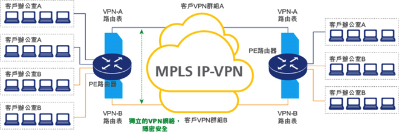
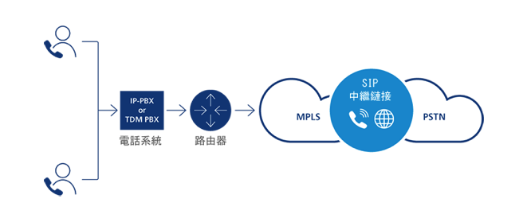
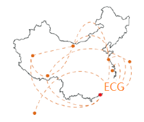


<!DOCTYPE html PUBLIC "-//W3C//DTD XHTML 1.0 Transitional//EN" "http://www.w3.org/TR/xhtml1/DTD/xhtml1-transitional.dtd">
<html xmlns="http://www.w3.org/1999/xhtml">


<head>
<meta http-equiv="Content-Type" content="text/html; charset=utf-8" />
<meta name="viewport" content="width=device-width, initial-scale=1, maximum-scale=1"/>
<title>Easy Great</title>

<link rel="shortcut icon" href="img/1icon.ico" type="image/x-icon">
<link rel="icon" href="img/1icon.ico" type="image/x-icon">

<link rel="stylesheet" type="text/css" href="library/animate.css" />
<link rel="stylesheet" type="text/css" href="library/bootstrap/css/bootstrap.css" />
<link rel="stylesheet" type="text/css" href="library/slick/slick/slick.css" />
<link rel="stylesheet" type="text/css" href="css/vacancies.css" />
<link rel="stylesheet" type="text/css" href="css/style.css" />
<link rel="stylesheet" type="text/css" href="css/responsive.css" />
<link rel="stylesheet" type="text/css" href="css/fonts/fonts.css" />
<link rel="stylesheet" type="text/css"
          href="https://fonts.googleapis.com/css?family=Montserrat">


<script type="text/javascript" src="js/jquery-1.11.js"></script>
<script type="text/javascript" src="library/bootstrap/js/bootstrap.js"></script>
<script type="text/javascript" src="library/slick/slick/slick.min.js"></script>
<script type="text/javascript" src="js/SmoothScroll.js"></script>
<script type="text/javascript" src="js/jquery.parallax-1.1.3.js"></script>
<script type="text/javascript" src="js/jquery.cycle2.min.js"></script>
<script type="text/javascript" src="js/jquery.cycle2.carousel.js"></script>
<script type="text/javascript" src="js/ios6fix.js"></script>
<script type="text/javascript" src="js/main.js"></script>
<script type="text/javascript" src="js/vacancies.js"></script>


</head>

<body>
<div id="wrap" class="clearfix">
	<div id="mobile-plane"></div>
   
    <div id="wrapper-header">
        <div id="header" class="clearfix">
            <div class="mobile-menu-btn"></div>
            <div class="wrapper-slide-menu">
                <ul class="slide-menu">
                    <li><a href="#" rel="about-us">關於我們</a></li>
                    <li><a href="#" rel="services">服務</a></li>
                    <li><a href="#" rel="partner">合作伙伴</a></li>
                    <li><a href="#" rel="data-center">數據中心</a></li>
                    <li><a href="#" rel="contact-us">聯絡我們</a></li>
                   
                </ul>
            </div>
            
            <div id="logo"><h2 ><a href="#"></a></h2></div>
            
            
            <div id="menu">
                <ul class="clearfix">
                    <li><a href="#" rel="about-us">關於我們</a></li>
                    <li><a href="#" rel="services">服務</a></li>
                    <li><a href="#" rel="partner">合作伙伴</a></li>
                    <li><a href="#" rel="data-center">數據中心</a></li>
                    <li><a href="#" rel="contact-us">聯絡我們</a></li>
                </ul>
            </div>
        </div>
    </div>
    
    <div id="wrapper-banner">
        <div class="homeSlideShow"
            data-cycle-swipe="true"
            data-cycle-swipe-fx="scrollHorz"
            data-cycle-timeout="6000"
            data-cycle-slides="> div"
            data-cycle-pager=".homeSlidePager" 
            data-cycle-pager-template="<span></span>" 
            data-cycle-prev="#prev"
            data-cycle-next="#next"
            >
            
            <div class="slide">
                
                <div class="banner-text zero">
                    <div class="wrap">
                    </div>
                </div>
            </div> 
            
            <div class="slide">
                
                <div class="banner-text zero">
                    <div class="wrap">
                        
                    </div>
                </div>
            </div>
            
            
        </div>
        <div class="sep-0"></div>
        <!--
        <div id="prev">Prev</div>
        <div id="next">Next</div>
        <div class="homeSlidePagerWrapper">
            <div class="homeSlidePager clearfix"></div>
        </div>
        -->
    </div>

    
    <div id="wrapper-home">
        <div class="home">
        	<!--
            <div class="background-1"></div>
            <div class="background-2"></div>
            -->
            
      </div>         
    </div>  
    <div id="wrapper-about-us">
      <div class="about-us anchor">         
             <div class="inner">    
                <h2>關於 Easy Great</h2>
                <div class="sep-10"></div>
                <div class="sep-10"></div>
                <p>
                Easy Great Technology ( 順宏科技有限公司 ) 憑藉專業知識及高靈活性的設備資源，致力為客戶提供一系列的資訊科技方案；服務涵蓋技術支援、網絡專線、通訊系統、網絡安全，以至整個基礎設施管理服務等，協助客戶集中管理資源、迅速部署，實時執行 各類規模的資訊科技項目，從而節省時間及成本，大大提升企業整體的營運效率和競爭力。
<br/><br/>
除此之外，我們專業的顧問團隊會因應不同客戶的需求，提供一套度身訂制的數據中心服務，當中包括主機托管、寄存式管理、網絡保安和存取監控，以及配置上的支援，透過全面而合符成本效益的解決方案，切合各類規模的企業所需。加上集團資本實力雄厚，除了提供多元化的產品組合，更保障客戶享有持續、穩健的服務，絕對是可靠信賴的合作夥伴。
<br/><br/>
面對瞬息萬變的商業環境，Easy Great 致力為客戶提供具國際水準之ICT (Information Communications Technology，資訊與通訊技術) 解決方案。揉合豐富的業內經驗和專業知識，加上以客爲先的服務態度，為客戶提供下列多元化的產品服務，以助客戶一臂之力，携手打造優越的營商環境。
</p>
			</div>
        </div>
    </div>

    <div id="wrapper-services">
        <div class="services blue anchor">
            <div class="inner">
                <h2>服務</h2>
                <div class="sep-10"></div>
                
                <div class="sep-10"></div>
                <p class="intro">
                    
                </p>
                
                <div id="tabs" class="boxes inline-block">
                    <a href="#wrapper-services" onclick="openTab('t1')"><h1 class="box tablink t1 tabactive">管理式數據中心營運服務</h1></a>
                    <a href="#wrapper-services" onclick="openTab('t3')"><h1 class="box tablink t3">虛擬專用網絡</h1></a>
                    <a href="#wrapper-services" onclick="openTab('t4')"><h1 class="box tablink t4">顧問諮詢服務</h1></a>
                    <a href="#wrapper-services" onclick="openTab('t5')"><h1 class="box tablink t5">維修支援服務</h1></a>
                    <a href="#wrapper-services" onclick="openTab('t6')"><h1 class="box tablink t6">多供應商支援服務</h1></a>
                    <a href="#wrapper-services" onclick="openTab('t7')"><h1 class="box tablink t7">語音通訊服務</h1></a>
                </div>
                 
              <div class="content inline-block">
                	<div id="t1" class="tabdiv">                    
	                    <p>我們致力為客戶提供高靈活性、可靠安全的數據中心服務，營造優質完善的托管環境，協助客戶保護其關鍵的數據資產，支援業務持續增長。服務主要包括實體主機托管、企業備份方案、雲端寄存及管理平台等；我們專業的營運團隊會為客戶提供全天候技術支援，利用綜合式數據中心管理框架提供安全嚴密的保護和妥善的管理服務。我們每月會提供詳細的表現報告，剖析伺服器狀態及活動狀況，客戶更可透過網上系統實時監控運作；加上數據中心的基礎設施有完善的備份支援，不但保障了客戶伺服器得以持續運行，更可分擔客戶日常數據中心的管理工作，讓其得以專注處理核心業務。
                        <br/><br/>
                        與此同時，我們提供多條對外BGP線路（Border Gateway Protocol，邊界網關協議）。由於BGP協議本身具有冗餘備份、消除環路的特點，並支持 IPV4 及 IPV6協定，所有骨幹路由設備將會自行選擇到本機房優質的網際網絡路徑，客戶端不但能實現高速訪問，路由之間的相互備份，更確保對國際及中國連線不會斷線，有助客戶維持高競爭力，快速進入全球任何地方市場。
                        </p>
                    </div> 
                    <div id="t3" class="tabdiv">                    
	                    <p>利用點對點虛擬專用網絡技術，維持高度隱密、靈活、快捷的網絡速度，絕對有助客戶提升競爭力及效率，並擴展特定的業務需求。Easy Great 與各地電訊商有著緊密的合作關係，網絡服務覆蓋無遠弗屆。我們採用MPLS (Multiprotocol Label Switching，多協議標籤交換) 傳輸技術，為客戶創建一個加密的虛擬專用網絡環境 (VPN，Virtual Private Network)，將語音、數據和影像整合至單一網絡內，由於較少的網絡負載，促使檔案得以高速轉發的方式進行傳輸；而且無論業務大小，計算機的多寡均能受惠，讓客戶企業盡享成本效益之餘，也提高了內部的資訊安全。再者MPLS-IP虛擬專用網絡可以從網絡中增加或移除站點，其高擴展性及靈活彈性的優勢令各地的辦公點連成一線，促進客戶業務得到持續發展，開拓更多新市場的機遇。
</p>
						
                    </div> 
                    
                    <div id="t4" class="tabdiv">                    
	                    <p>我們為客戶公司、系統及網絡提供一站式的專業評估及建議方案，深入理解不同客戶的既有架構，再因應需求提供未來的資源整合與策略規劃：如數據中心、伺服器部署、系統重構或轉移、網絡設計、數據安全、災備運作規劃、以至用戶體驗及營運監控等各方面，為客戶提供有效可行、具前瞻性的解決方案。
						</p>
                    </div>    
                    
                    <div id="t5" class="tabdiv">                    
	                    <p>Easy Great 擁有一批具專業資格及經驗豐富的工程師，我們團隊除了具有資深的資訊科技知識，同時對商業營運亦有相當深入的瞭解；確保不同行業及規模的企業能獲得快捷、靈活及全面的軟硬件支援及維修服務。
再者我們致力維護客戶業務的連續性，因應不同客戶所需，安排多重的支援途徑，當中包括日常支援服務、人員派駐服務，以及緊急支援服務。利用電話服務、遠端操控、上門支援，為客戶提供一整套公司所需的技術支援服務，如數據遷移及備份、電子郵件存檔、文件管理、系統應用處理等；協助客戶有效控制預算成本，同時提高商業及運作效率。
</p>
						
                    </div>
                    
                    <div id="t6" class="tabdiv">                    
	                    <p>一套具成本效益的語音通訊方案，有助於世界各地員工、合作夥伴與客戶更有效聯繫和合作。我們為客戶提供各類型的VoIP方案（Voice over IP，網際協議通話技術），將數據和語音整合至單一線路，從此客戶不需再為每項服務分別設置通訊體。加上VoIP服務費率低廉，可彈性選用預付或月結型式，配合不同地點的合作夥伴，有助客戶企業降低整體成本。而管理式IP語音系統及計費方案，能讓客戶下載詳細的通話數據，同時協助客戶有效管理成本。除此之外，呼叫中心方案可大大減少客戶服務人員的工作量，亦可提高促銷活動的成效，使客戶企業能有效地提升客戶服務水平並加強與其客戶之間的關係管理，從而提升企業形象。總括而言，結合我們的語音通訊服務，加上極具競爭性的費率，將助客戶提高企業間的資訊分享和決策效率。
						</p>
                    </div>
                    
                    <div id="t7" class="tabdiv">                    
	                    <p>為滿足不同客戶的需要，Easy Great 為全球多家供應商提供一應俱全的支援服務。支持客戶管理不同品牌的軟硬件產品及系統資源，包括個人電腦、網絡設備、伺服器和儲存設備；作業系統以至應用軟件等；協助客戶省卻同時管理多個服務供應商的時間資源，為複雜的資訊科技環境提供完善的支援，讓客戶得以專注業務發展，加強營運效率。
						</p>
                        
                    </div>

                </div>
                
                
            </div>
        </div>
    </div>
    
    <div id="wrapper-partner">
      <div class="partner anchor">         
             <div class="inner"> 
                <div class="logo inline-block">
                	
                </div>   
                <div class="content inline-block">   
               		<h2>合作伙伴</h2>
                    <p>
                    我們的客戶群非常廣泛，來自各行各業、遍佈全球；亞洲多家著名金融公司、貴金屬公司、線上遊戲公司等都在使用我們一系列的數據中心增值服務，如數據中心方案、虛擬專用網絡方案、網絡保安，以及系統和網路代管服務。而 Easy Great 憑藉優良的信譽，更有幸成為衆多網站的指定營運商 。我們重視與客戶長遠的合作關係，視每位客戶為並肩同行的合作夥伴，彼此是建基於深厚及互相信賴的合作關係！大家相輔相成，促進彼此業務成長，同步邁向未來。然而我們將進一步以大中華地區為重點目標市場，務求成為國內最優秀的資訊科技方案策略夥伴。
                    </p>
                </div>    
			</div>
        </div>
    </div>
    
    <div id="wrapper-data-center">
      <div class="data-center anchor">         
             <div class="inner">   
             	<h2>數據中心</h2>
                <p>
                    Easy Great 共設有三個，分別座落於荃灣數據中心、大圍、以及將軍澳數據中心；為客戶企業提供廣泛的數據中心服務，包括管理式託管、雲端及網絡服務。無論是數據中心的位置、網絡連接、安全性、以及可靠性，均能符合不同業務需求。我們一向重視客戶數據資料安全，明白只有未雨綢繆，才能防範於未然，為每位客戶制定多個災備計劃及業務持續方案，並配備全面的業務營運設施；萬一遇到嚴重事故方能即時部署，協助客戶迅速恢復正常業務運作，以維護客戶長遠而持續的業務利益為依歸。
                    <br/><br/>
香港能穩固國際金融中心的地位，實有賴其先進的電訊基建促進本地與國際之間的通訊，協助企業在區內奠立根基。我們先進創新的數據中心業務遍佈全球，為環球企業提供全面及高擴充性的數據中心增值服務；目前在香港及世界各地已同時管理客戶多達 <span class="orange">1,000 台的伺服器、十多條專線網絡，</span>我們專業的服務團隊為客戶提供<span class="orange">全天候24 × 7 x 365的即時支援服務</span>，而對外的網絡服務更擁有多達15G的國際/中國頻寬；如在繁忙時間處理5G的頻寬，平均時間保證可達1.2G以上。
透過在環球各地多個小型節點，連接多個網絡商的區域回路以處理<span class="orange">MPLS虛擬專用網絡、VOIP語音通訊服務等多元化的產品服務</span>。我們憑藉強大的環球網絡及豐富的客戶經驗，利用最具彈性及可靠的服務保證，協助客戶連接不同地區的業務、抓緊市場機遇。
					<br/><br/>
                    我們以香港作為核心基地，放眼大中華市場，透過與國內電訊服務供應商的緊密合作，為客戶提供完善而又多元化的路徑、安全優質的網絡質素，以應付客戶對專線互聯網接駁服務的不同需求。Easy Great 秉承一向以極為穩定及超卓網絡效能的服務宗旨，對提供協作服務的供應商有著嚴謹的標準及要求，並對客戶提出多項承諾：
				</p>
                        
                <div class="logo inline-block">
                	
                </div>   
                <div class="content inline-block"> 
                    <h2>中國節點公網線路</h2>
                    <p>
                    香港毗鄰中國，商貿往來頻繁，資料傳送以及通訊質素對與中國經常有商業來往的客戶尤為重要。利用以北京、上海、廣州三大中心結構節點的公網線路，直通中國電信、中國聯通及中國移動，以高速數據專線實現國內各節點互聯，<span class="orange">並保證延時不會超過25ms、掉包率小於1%，在線率高達 99.999%</span>，大大優化客戶通往中國內地的網絡連線質素。
                    </p>
                </div>  
                
                <h3>網絡專線</h3>
                <p>
                    我們致力為客戶提供高速點對點連線能力，專屬的第一層及第二層網絡為各式應用程式與通訊協定提供富有彈性的傳輸功能，服務地區遠達中國中部、西部及北部。確保線路提供極可靠、低抖動的連線，包括第二層在內的協定
，<span class="orange">如LACP (Link Aggregation Control Protocol，鏈路彙聚控制協議)、TRUNK (端口汇聚)、Jumbo Frame (巨大封包)等，延時不會超過25ms、掉包率小於1%，在線率高達 99.999%</span>，為客戶在網絡延時和數據包丟失上提供最佳的保證。
				</p>
                
                <h3>香港數據中心BGP線路</h3>
                <p>
                    BGP的最主要功能在於控制路由的傳播並選擇最好的路由；實現多條BGP線路互聯 (中國聯通、中國電信、中國移動)，由<span class="orange">國內節點到香港段，延時不會超過25ms、掉包率小於1%，除了保證客戶得到高速的網絡訪問，更確保在線率高達 99.999% </span>。我們支持完善而多元化的網絡路徑和冗餘網絡，網絡容錯 (fail-over) 提供了不間斷的網路服務，將網絡傳輸到不同地點的國際出口(北京、上海、廣州)再到國外或香港，以減低服務受到干擾的可能性。
					<br/><br/>
				</p>
                
                  
			</div>
        </div>
    </div>
    
    <div id="wrapper-contact-us">
      <div class="contact-us anchor">         
             <div class="inner">    
                <h2>聯絡我們</h2>
                <div class="sep-10"></div>
                <div class="sep-10"></div>
                <h3>
                如有任何查詢或商務洽談，請循以下途徑聯絡我們。
				</h3>
                <p>
                電話：+852-3907 7620<br/>
                電郵：<a href="mailto:cs@ecg-tech.com">cs@ecg-tech.com</a><br/>
                地址：Rm.2501 Cable TV Tower, No.9 Hoi Shing Road, Tsuen Wan N.T. HK<br/>
                </p>
			</div>
        </div>
    </div>
    <!--
    <div id="wrapper-footer">
        <div class="footer">
            <div class="inner">
                <p lang="en">Copyright © 2020, Easy Great Technology Limited, All Rights Reserved.</p>
            </div>
        </div>
    </div>
    -->
</div>
</body>


</html>
